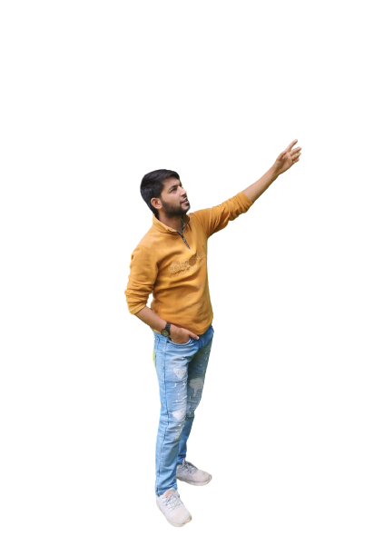

About
|
|

|
Thanks for your interest, here
is a quick story of me and this
website.
My Self Yasir Ahmad Hajam
i live in kashmir district Anantnag
I do my work mainly in C-Language,
C++ and JAVA. C++ and Data Structure
& Algorithm are my stronger section.
Besides these I know Web Development,
LINUX and database as well.
This website is basically one of my
Web Development project which is
built using HTML and css.
Here one can also find ideas for
projects in different languages.
Thanks again for reading this,
because of people like you, it
exists and prospers!
Cheers,
Yasir Mohiuddin.
|
|